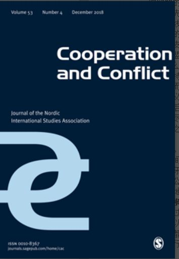

收录于合集

简 介
**
**
【原题】 Agenda-Setting in the Common Security and Defence Policy: An Institutionalist Perspective
【作者简介】 Hylke Dijkstra，荷兰马斯特里赫特大学欧洲研究负责人，《当代安全政策》杂志的主编。
【来源】
Cooperation and Conflict，Vol 47, Issue 4, 2012
** 【期刊简介 】**Cooperation and Conflict ，是一份致力于发表高质量的研究问题广泛的文章的同行评议期刊，其重点关注北欧和欧洲事务。
** 【刊期简介 】**杨艺华

核 心 观 点
自2003年欧盟共同安全和防务政策开始实施以来，欧盟已启动了数量可观的危机管理任务。为什么欧盟要启动如此多的危机管理任务？作者认为，从制度主义的视角来看，启动危机管理任务符合前高级代表索拉纳及其部下的利益，他们利用了其在共同安全与防务政策中的核心地位、先行者优势及国际网络使危机管理任务列入了欧盟的议程。
一、 理论框架
在这部分，作者讨论了关于欧盟议程设定的文献，并讨论了索拉纳及其部下在欧盟议程设定方面所拥有的资源。
欧盟的议程设定过程就是不同行为体试图使他们自己的议题处于欧盟议程的优先位置的过程。这时，欧盟委员会等行为体拥有正式的议程制定权，而前高级代表索拉纳及其部下则只能非正式地影响欧盟的议程设置。所谓非正式地影响欧盟的议程设置，不是指提出明确的看法，而是指挑选那些有利于自己的议题并争取他人的支持以使政策有利于自己。而作者认为高级代表及其部下能否成功影响欧盟的议程设置，和以下几点有关。
首先，Venue- shopping，即选择最容易接受自己的议题的决策场所。此时有两种路线，一种是自上至下施压的政治路线即影响欧洲理事会决策，另一种是从下往上的行政路线即通过不断地提议来渐进地影响决策。其次，conflict expansion,即扩大支持此议题的群体。在外部，争取美国、联合国等第三方的支持并提高外界对欧盟行动的期望可以明显影响议程制定的进程；在内部，如果反对者是分散的，那么找到志同道合的成员国并形成统一战线绝对是有益的。在争取其他参与者的支持时，议题的框架也很重要。例如，由于大多数欧盟成员国更喜欢人道主义干预而不是殖民后的稳定努力，为争取成员国的支持可以把自己的议题说成是人道主义干预。但是，议题的框架可能会影响政策的结果，从而偏离了自己的偏好。最后，有一个明显的先行者优势。行动者的范围越广，改变话语就越困难。因此，尽早参与对议程的制定至关重要。
总之，如果行动者在政策进行中占据中心位置、拥有国际网络并能拥有先行者优势，那么他就能够影响欧盟议程。而欧盟高级代表索拉纳及其部下就拥有这些资源。首先，由于他们负责危机管理行动的计划并充当危机管理行动和欧洲理事会之间的纽带，所以他们在共同安全与防务政策中占据核心地位。其次，作为前西班牙外长和前北约秘书长的索拉纳能够接触到许多国家的高层，而其部下作为欧盟公务员能够接触到其他欧盟机构。最后，与成员国相比，索拉纳及其部下能更早地参与共同安全与防务政策。
** ** ** ** ** ** 二、案例与结论************
通过对波黑的木槿花军事行动、亚齐监督团、欧盟在乍得与中非共和国的军事行动以及欧盟驻科索沃法治特派团这四个案例进行分析，作者发现：欧盟的议程设置都是在政治或行政路线上进行的；欧盟官员在议程设置阶段与志同道合者合作是行动的一个决定因素；索拉纳及其部下对议题框架的设置有重要的贡献。
声明
此文为国政学人微信公众平台外文编译系列文章之一，由国政学人编辑首发，不代表本平台观点。欢迎转发分享，未经授权谢绝转载。如有问题，请联系guozhengxueren@163.com
更多阅读
国政学人 （ID：guozhengxueren)
为方便学人及时阅读高质量文章
别忘把国政学人设置 星标 哦~